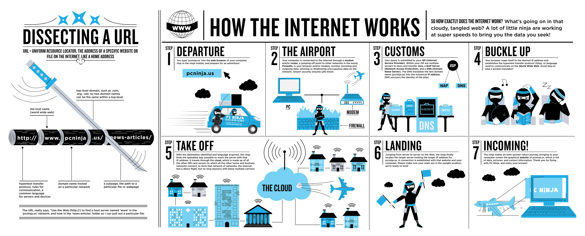

"Internet? You mean the thing we click to search our favorite dish recipe or look up videos of the 'Corgi Flop'?"
Yes! We often take the amazing powers of the Internet for granted because -- let's face it -- it's been available for us without any cost! I know nobody likes a know-it-all... but allow me to show you in steps how the Internet really works. Wouldn't hurt, right?

Step 1.
This is the part you're probably the most familiar with. It's simply when you type the desired website's url (i.e. github.com) into your brower.
Step 2.
One of the key components of the Internet is called the hardware. It includes everything from the cables to a modem and/or router. A modem or a router allows you to travel to another network around the world. Firewalls in your browser act as a security guard that permits or prohibits incoming/outcoming data.
Step 3.
Now... SOMETHING's got to be storing all these information we find on the web, right? Unsurprisingly, there are machines called the servers that store information. When your query reaches the ISP (Internet Service Provider), one of many servers called a DNS Server (Domain Name Server) translates the text domain name (github.com) into the numerically specific IP address.
Step 4.
With the identified IP address, your browser will now get ready to take you to the unique location on the World Wide Web using a special language called the hypertext transfer protocol (http).
Step 5.
The brower travels through the cloud, which consists of all the other ISPs and home/business networks. It is a network of networks, so in essence the cloud is the Internet.
Step 6.
A successful connection between you and the desired website is established.
Step 7.
Your brower finally brings back the data and information from the website to your computer. The rate of retrieval is usually faster than the rate of establishment.
There you have it, folks. This is how the Internet works. Beautiful!